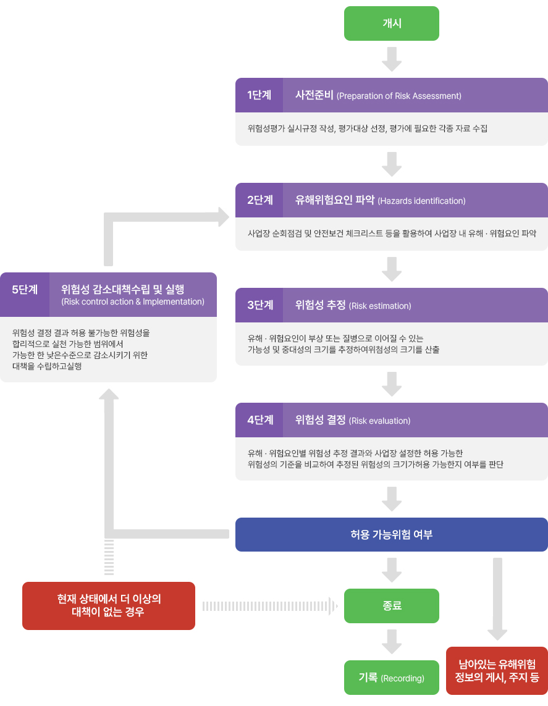

메뉴에 링크가 걸려있습니다. 각 페이지는 링크로 직접 확인해주세요
홈
위험성평가 담당자 교육
위험성평가 안내
위험성평가란?
사업장의 유해·위험요인을 파악하고 해당 유해·위험요인에 의한 부상 또는 질병의 발생 가능성(빈도)과 중대성(강도)을 추정·결정하고 감소대책을 수립하여 실행하는 일련의 과정을 말합니다.
위험성평가 실시 주체?
위험성평가는 사업주가 주체가 되어 안전보건관리책임자, 관리감독자, 안전관리자ㆍ보건관리자 또는 안전보건관리담당자, 대상작업의 근로자가 참여하여 각자의 역할을 분담하여 실시하도록 하고 있습니다.
위험성평가 절차

관련법령